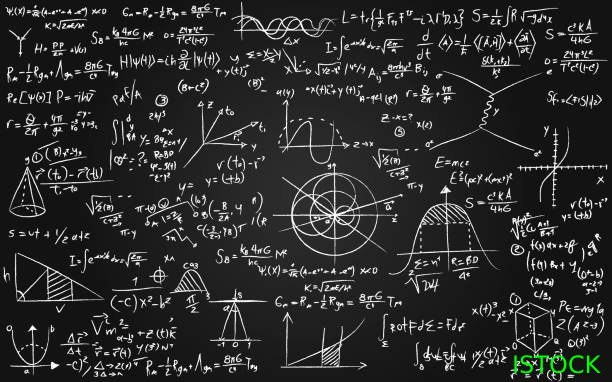

Matek
A matematika a számok, mennyiségek és alakzatok tudománya, amely az emberi gondolkodás egyik alapvető eszköze. A számok segítségével mérünk, számolunk és modellezünk valós jelenségeket. A természetes számok a legegyszerűbbek, amelyeket a tárgyak megszámlálására használunk, míg az egész számok és a racionális számok lehetővé teszik a bővítést negatív értékek és törtek irányába. Az irracionális számok, mint a π (pi) vagy √2, tovább bővítik a számtani rendszert. A valós számok összekapcsolják mindezeket, míg a komplex számok a képzeletbeli egységeket is tartalmazzák. A matematika alapja az absztrakt gondolkodás, és a modern tudományok, mint a fizika vagy informatika, szorosan építenek rá.
Alakzatok
A matematika a számok, mennyiségek és alakzatok tudománya, amely az emberi gondolkodás egyik alapvető eszköze. A számok segítségével mérünk, számolunk és modellezünk valós jelenségeket. A természetes számok a legegyszerűbbek, amelyeket a tárgyak megszámlálására használunk